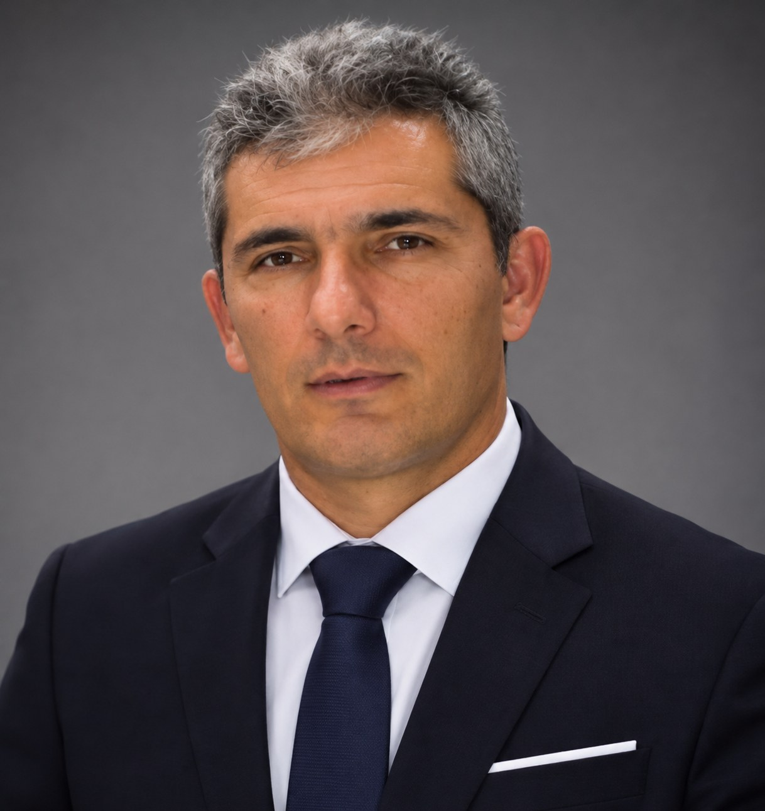
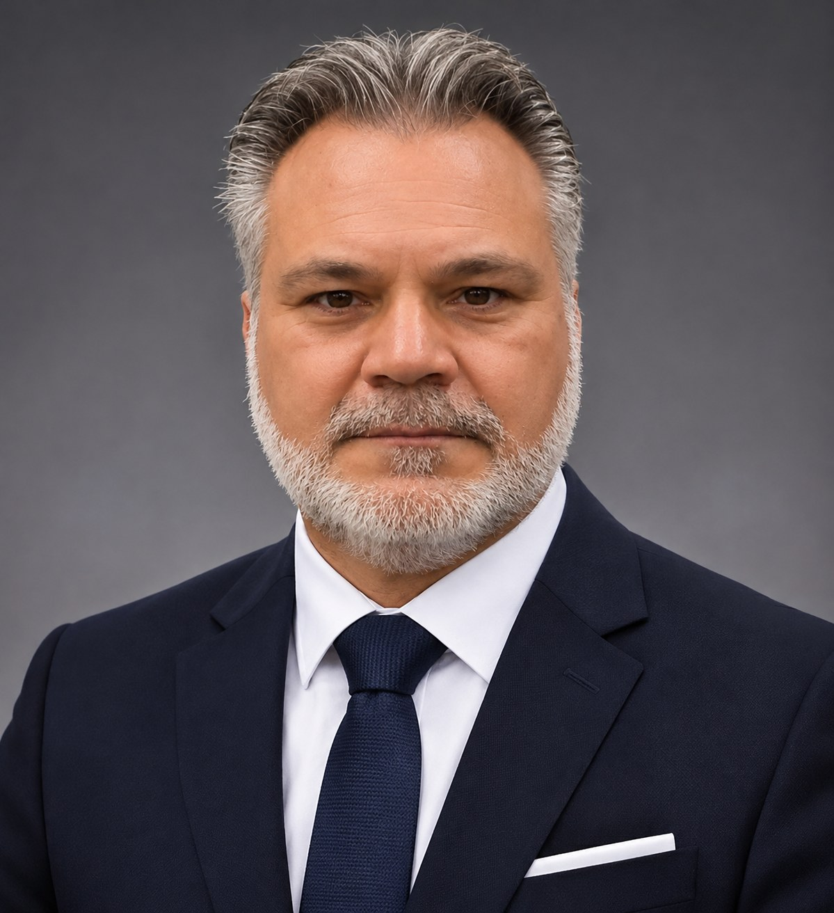

FC PONTOS MÜNCHEN
1968
← Zur Startseite
ΕΛ
Vereinsführung
Unser Vorstand
Unsere Ansprechpartner im Verein.

Georgios Katirtzidis
Vizepräsident
Tel.:
0163 / 1851085
Christos Aramadanidis
Sportdirektor
Tel.:
0176 / 20766041

Dionisios Koutas
Kassenwart
Tel.:
0162 / 2740521